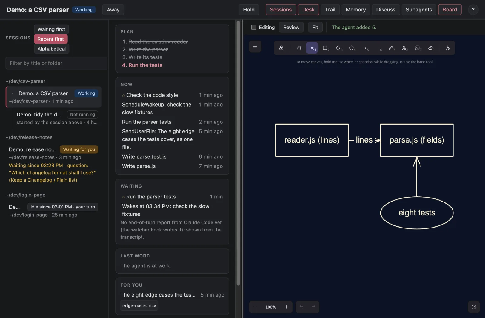

garnet-scoping
Detailed views of and enhanced interactions for your work with Claude Code.
garnet-scoping sits beside each Claude Code session. It shows what the agent is doing, read from the session's own record, and gives you and the agent a board to draw on together. It only reads: nothing you do in it slows the agent down.
Download
__LATEST_TAG__Free and open source under AGPL-3.0-or-later. Needs Claude Code. See all releases.

One session's window: the sessions, the Desk with the agent's present state, and the shared board.
See what it is doing.
The Desk shows the agent's plan, the step it is on, what it waits on and every turn, from what Claude Code records rather than from the agent's account of it.
Show what you mean.
A shared board for diagrams, mock-ups and questions placed on the very spot they concern; the agent reads it and answers on it.
Steer without losing work.
Mark any step to discuss, ask an aside, or hold the agent at the end of its step; nothing in progress is cancelled.
Installing
macOS
Open the .dmg and drag garnet-scoping to Applications. It is signed and notarised.
Ubuntu
Install the package with sudo apt install ./garnet-scoping-*.deb.
Linux AppImage
Make it executable and run it; set GARNET_SCOPING_APP to its path in your shell profile.
Then, once
Open Set-up Info in the app and run its two commands, which install the garnet-scoping plugin into Claude Code.